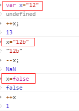

操作符
- 递增++，递减--
遵循的规则：
- 当对字符串加减1的操作时，若字符串包含有效数字字符，先将字符串转换为数字值，再进行操作。
- 当对字符串加减1的操作时，若字符串不包含有效数字字符，将变量值设为NaN，再进行操作。
- 当对布尔值加减1的操作时，先将其转换成数值变量（false：0，true：1），再进行操作.
- 在对对象加减1的操作时，先调用对象的valueOf()方法以取得一个可供操作的值，然后对该值应用前述规则。如果结果是NaN，则在调用toString()方法后在应用前述规则。

- 一元+、-操作符
遵循的规则：
- 布尔值false和true将被转换成0和1，再进行操作
- 字符串会被按照一组特殊的规则进行解析，再对解析出来的值进行操作。
- 对象先调用他们的valueOf（）和（或）toString（）方法，再转换得到的值。

- 位操作符 ——NOT（~）
返回数值的反码（各位取反）

- 位操作符 —— AND（&）
全1则1

- 位操作符 —— OR（|）
有1则1

- 位操作符 ——XOR（^）
同为0，异为1

- 位操作符 ——左移（<<）
将数值的所有位向左移动指定的位数。不会影响操作数的符号位


- 位操作符 ——有符号右移（>>）
如果是正数，那么高位由0填充；如果是负数，高位由1填充。

- 位操作符 ——无符号右移（>>>）
无论是正数还是负数，高位都由0来填充。

- 布尔操作符 ——逻辑非（ ！）
将它的操作数转换为一个布尔值，然后对其求反。遵循的规则：
- ！对象，返回false
- ！空字符串，返回true
- ！非空串，返回false
- ！0，返回true
- ！非0，返回false
- ！null，返回true
- ！NaN，返回true
- ！undefined，返回true

同时使用两个！，可将一个值转换为与其对应的布尔值。
- 布尔操作符 ——逻辑与（ &&）
逻辑与操作属于短路操作，即如果第一个操作数能够决定结果，那么不会再对第二个操作数求值。遵循的规则：
- false&&XX，返回false
- 对象1 && 对象2，返回 对象2
- null && XX，true && null，返回null
- NaN && XX，true && NaN，返回NaN
- undefined && XX，true && undefined，返回undefined
- true && XX，返回XX
- 布尔操作符 ——逻辑或（ || ）
逻辑或操作属于短路操作，即如果第一个操作数能够决定结果，那么不会再对第二个操作数求值。遵循的规则：
- true || XX，XX || true，返回true
- false || XX，返回XX
- 对象 || XX（包括true，false），返回对象
- null || false，undefined || false，NaN || false，返回false
- null || null，返回null，undefined，NaN同理
ECMAScript定义了3个乘性操作符：乘法、除法、求模。
- 乘性操作符——乘法（*）
遵循的规则：
- 如果乘积超过了ECMAScript数值的表示范围，则返回Infinity或-Infinity
- NaN * X=NaN，X包括null、undefined、Inifinity
- Infinity * 0=NaN
- Infinity * 非零正数=Infinity，Infinity * 非零负数=-Infinity
- Infinity * Infinity = Infinity
- null*任意数值=0
- null*undefined=NaN，
- 如果有一个操作数不是数值，则在后台调用Number（）转为数值，再应用上面的规则。

- 乘性操作符——除法（/）
遵循的规则：
- 如果商超过了ECMAScript数值的表示范围，则返回Infinity或-Infinity
- 有一个操作数是NaN，结果是NaN
- Infinity/Infinity=NaN
- Infinity/正数=Infinity，Infinity/负数=-Infinity，Infinity/0=Infinity
- 0/0=NaN
- 非零/0=±Infinity
- 非零/Infinity=±Infinity
- 如果有一个操作数不是数值，则在后台调用Number（）转为数值，再应用上面的规则。
- 乘性操作符——求模（%）
ECMAScript定义了2个加性操作符：加法、减法。
- 加性操作符——加法（+）
遵循的规则：
- 如果两个操作数都是字符串，则进行字符串拼接
- 如果只有一个操作数是字符串，则将另一个操作数转换为字符串，然后进行字符串拼接。
- 加性操作符——减法（-）
遵循的规则：
- 如果有一个操作数是字符串，布尔值，null（0），undefined（NaN），则现在后台调用Number（）函数将其转换为数值，然后再根据前面的规则执行减法计算
- 如果有一个操作数是对象，则调用对象的valueOf（）方法取得表示该对象的数值，
- 关系操作符——<、>、<=、>=
- 相等操作符——相等和不等==、!=
- 相等操作符——全等和不全等===、!==
- 条件操作符——？：
- 赋值操作符——=、*=、/=、%=、+=、-=、<<=、>>=、>>>=
- 逗号操作符